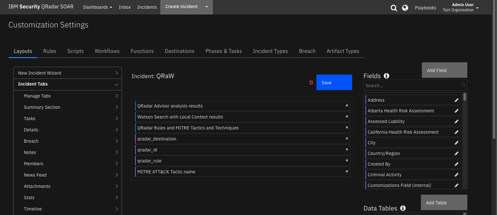

QRadar Advisor Functions¶
Table of Contents¶
Release Notes¶
Version |
Date |
Notes |
|---|---|---|
2.1.1 |
7/2024 |
Converted workflows to Python3 |
2.1.0 |
9/2022 |
QRadar Use Case Manager support. CAFM deprecated. Payload samples. |
2.0.2 |
9/2020 |
App Host & proxy support. Updated deprecated API endpoints. |
2.0.1 |
2019 |
Python 3 bug fix |
2.0.0 |
2019 |
Support for 2.0 |
1.0.1 |
8/2018 |
Watson Search fixed version compatibility with search that returns no data |
1.0.0 |
2018 |
Initial Release |
Overview¶
IBM SOAR QRadar Advisor Functions

The QRadar Advisor integration with IBM QRadar SOAR enables SOAR users to gather Cyber MITRE ATT&CK information from QRadar Advisor. The integration supports QRadar Advisor quick search, full search, map a rule, and retrieve offense insights and analysis.
Key Features¶
Backed by IBM Watson, QRadar Advisor applies artificial intelligence to automatically investigate indicators of compromise (IOC), utilizes cognitive reasoning to provide critical insights, and ultimately accelerates the response cycle. It can augment a security analyst to gain a head start in assessing incidents and reduce the risk of missing threats.
QRadar Advisor Integration Function enables Qradar SOAR users to gather Cyber Threat Intelligence(CTI) data from IBM Watson and QRadar. This information is critical for effective identification of potential IOC and quick response to incidents. In addition, this integration receives MITRE ATT&CK information from QRadar Advisor. As a result, an example workflow of this integration depends on the MITRE ATTACK function integration.
QRadar Advisor integration includes four functions:
Perform a Watson Search on an indicator and retrieve suspicious observables related to it.
Perform a Watson Search with Local Context on an indicator and retrieve a cyber threat intelligence (CTI) report on it in Structured Threat Information eXpression (STIX2) format.
Perform an analysis on a QRadar offense, and retrieve CTI data from QRadar Advisor and IBM Watson in STIX format.
Map a given QRadar rule to MITRE ATT&CK tactics.
The package also includes workflow examples to demonstrate the usage of the above functions.
Requirements¶
This app supports the IBM Security QRadar SOAR Platform and the IBM Security QRadar SOAR for IBM Cloud Pak for Security.
SOAR platform¶
The SOAR platform supports two app deployment mechanisms, Edge Gateway (also known as App Host) and integration server.
If deploying to a SOAR platform with an App Host, the requirements are:
SOAR platform >=
51.0.0.0.9340.The app is in a container-based format (available from the AppExchange as a
zipfile).
If deploying to a SOAR platform with an integration server, the requirements are:
SOAR platform >=
51.0.0.0.9340.The app is in the older integration format (available from the AppExchange as a
zipfile which contains atar.gzfile).Integration server is running
resilient_circuits>=46.0.0.If using an API key account, make sure the account provides the following minimum permissions:
Name
Permissions
Org Data
Read
Function
Read
The following SOAR platform guides provide additional information:
Edge Gateway Deployment Guide or App Host Deployment Guide: provides installation, configuration, and troubleshooting information, including proxy server settings.
Integration Server Guide: provides installation, configuration, and troubleshooting information, including proxy server settings.
System Administrator Guide: provides the procedure to install, configure and deploy apps.
The above guides are available on the IBM Documentation website at ibm.biz/soar-docs. On this web page, select your SOAR platform version. On the follow-on page, you can find the Edge Gateway Deployment Guide, App Host Deployment Guide, or Integration Server Guide by expanding Apps in the Table of Contents pane. The System Administrator Guide is available by expanding System Administrator.
Cloud Pak for Security¶
If you are deploying to IBM Cloud Pak for Security, the requirements are:
IBM Cloud Pak for Security >=
1.10.15.Cloud Pak is configured with an Edge Gateway.
The app is in a container-based format (available from the AppExchange as a
zipfile).
The following Cloud Pak guides provide additional information:
Edge Gateway Deployment Guide or App Host Deployment Guide: provides installation, configuration, and troubleshooting information, including proxy server settings. From the Table of Contents, select Case Management and Orchestration & Automation > Orchestration and Automation Apps.
System Administrator Guide: provides information to install, configure, and deploy apps. From the IBM Cloud Pak for Security IBM Documentation table of contents, select Case Management and Orchestration & Automation > System administrator.
These guides are available on the IBM Documentation website at ibm.biz/cp4s-docs. From this web page, select your IBM Cloud Pak for Security version. From the version-specific IBM Documentation page, select Case Management and Orchestration & Automation.
Proxy Server¶
The app does support a proxy server.
Python Environment¶
Python 3.9, 3.11, and 3.12 are officially supported. When deployed as an app, the app runs on Python 3.11. Additional package dependencies may exist for each of these packages:
resilient_circuits>=46.0.0
Development Endpoint Environment¶
This app has been implemented using:
Product Name |
Product Version |
|---|---|
QRadar Advisor with Watson |
2.6.3 |
QRadar Use Case Manager |
3.5.0 |
Prerequisites¶
QRadar 7.3.0 or later
Qradar Advisor with Watson
QRadar Use Case Manager 3.1.0 or greater
Configure IBM QRadar Advisor with Watson¶
You need to have IBM QRadar Advisor With Watson installed on a QRadar server, and fully configured, as shown in the following configuration page.
To access the QRadar Advisor REST API, you need to know its app_id, which you can access by clicking the QRadar Advisor’s Configuration icon. For example, in the URL address shown in the configuration page screenshot, the app_id is 1101 for this QRadar Advisor instance.
You also need an access token to use the REST API. You can obtain access tokens from the Authorized Service Token section of the Admin page in QRadar.
Configure QRadar Use Case MAnager¶
You need to have QRadar Use Case Manager installed on a QRadar server and fully configured, as shown in the following configuration page.
An access token is required to use the REST API. You can obtain access tokens from the Authorized Service Token section of QRadar’s Admin page. This token can be the same as the authorization token used for QRadar Advisor above.
Installation¶
Install¶
To install or uninstall an App or Integration on the SOAR platform, see the documentation at ibm.biz/soar-docs.
To install or uninstall an App on IBM Cloud Pak for Security, see the documentation at ibm.biz/cp4s-docs and follow the instructions above to navigate to Orchestration and Automation.
App Configuration¶
The following table provides the settings you need to configure the app. These settings are made in the app.config file. See the documentation discussed in the Requirements section for the procedure.
Config |
Required |
Example |
Description |
|---|---|---|---|
qradar_advisor_app_id |
Yes |
`` |
QRadar Advisor App Id. |
qradar_advisor_token |
Yes |
`` |
QRadar Advisor token. |
qradar_host |
Yes |
|
QRadar host. |
qradar_ucm_token |
Yes |
`` |
QRadar Use Case Manager token. |
verify_cert |
Yes |
`` |
Boolean indicating whether to validate the QRadar server certificate. |
full_search_timeout |
No |
1200 |
Full search timeout in seconds. |
full_search_period |
No |
5 |
Full search period in seconds. |
offense_analysis_timeout |
No |
1200 |
Offense analysis timeout in seconds. |
offense_analysis_period |
No |
5 |
Offense analysis period in seconds. |
Function - QRadar Advisor Map Rule¶
Map rule to MITRE ATT&CK tactic.
Inputs:
Name |
Type |
Required |
Example |
Tooltip |
|---|---|---|---|---|
|
|
No |
|
Name of QRadar rule |
Outputs:
NOTE: This example might be in JSON format, but
resultsis a Python Dictionary on the SOAR platform.
results = {
"tactics": {
"has_ibm_default": true,
"id": "c0dfacf7-235e-416c-9b2b-c250ef8f3919",
"last_updated": 1607611408002,
"mapping": {
"Initial Access": {
"confidence": "high",
"enabled": true,
"ibm_default": true,
"id": "TA0001",
"techniques": {
"Valid Accounts": {
"confidence": "high",
"enabled": true,
"id": "T1078"
}
},
"user_override": false
}
},
"min-mitre-version": 7
}
}
Example Function Input Script:
inputs.qradar_rule_name = incident.properties.qradar_rule
Example Function Post Process Script:
tactics = results.tactics
mapping = tactics["mapping"]
att_tactics = ", ".join(mapping.keys())
incident.properties.mitre_tactic_name = att_tactics
Function - QRadar Advisor Offense Analysis¶
Given a SOAR artifact, this function performs a QRadar Advisor analysis and returns Local, Watson enriched, or Expanded local context (default) results.
Inputs:
Name |
Type |
Required |
Example |
Tooltip |
|---|---|---|---|---|
|
|
No |
|
stage1(Local), stage2(Watson enriched), stage3(Expanded local context) |
|
|
No |
|
restart the analysis if there is an existing result |
|
|
No |
|
QRadar Offense ID |
Outputs:
NOTE: This example might be in JSON format, but
resultsis a Python Dictionary on the SOAR platform.
results = {
"insights": {
"high_value_assets": [],
"high_value_users": [],
"insights": "Watson has analyzed this offense and a total of three observables. The reasoning process has not found any additional indicators that are related to this offense. No data points were found to be linked with the offense. One indicator was related to suspicious activity, and all indicators were active. In particular, one IP address has been found, which is known to be suspicious or malicious.",
"is_stage3_pending": false,
"malware_families": [],
"related_investigations": [
{
"analysis_time": null,
"concern_score": null,
"id": 1,
"is_search": true,
"priority": null,
"source": null,
"type": "Investigations"
}
],
"risky_users": [],
"stage3_insights": "",
"start_time": 1659629011957,
"stop_time": 1659636230480,
"tactics": [
{
"confidence": 60,
"data_sources": [
"xfe"
],
"event_count": 206,
"flow_count": 0,
"id": "TA0011",
"nodes": [
{
"is_internal": false,
"label": "89.223.26.52",
"type": "IpAddress"
}
],
"rules": [],
"tactic_id": "Command and Control",
"techniques": []
}
],
"threat_actors": [],
"watched_users": []
},
"note": "\u003cul\u003e\u003cli\u003e\u003cimg src=\"https://raw.githubusercontent.com/freetaxii/stix2-graphics/master/icons/png/stix2-meta-icons-png/identity-square-dark-300-dpi.png\" alt=\"identity\" style=\"width:20px; height:20px\"/\u003e userD\u003c/li\u003e\u003cul style=\"list-style-type:none\"\u003e\u003cli\u003e\u003cimg src=\"https://raw.githubusercontent.com/freetaxii/stix2-graphics/master/icons/png/stix2-sco-network-address-icons-png/ipv4-addr-square-dark-300-dpi.png\" alt=\"ipv4-addr\" style=\"width:20px; height:20px\"/\u003e 192.168.0.17\u003c/li\u003e\u003c/ul\u003e\u003c/ul\u003e\u003cul\u003e\u003cli\u003e\u003cimg src=\"https://raw.githubusercontent.com/freetaxii/stix2-graphics/master/icons/png/stix2-sco-network-address-icons-png/ipv4-addr-square-dark-300-dpi.png\" alt=\"ipv4-addr\" style=\"width:20px; height:20px\"/\u003e 89.223.26.52\u003c/li\u003e\u003cul style=\"list-style-type:none\"\u003e\u003cli\u003e\u003cimg src=\"https://raw.githubusercontent.com/freetaxii/stix2-graphics/master/icons/png/stix2-sco-network-address-icons-png/ipv4-addr-square-dark-300-dpi.png\" alt=\"ipv4-addr\" style=\"width:20px; height:20px\"/\u003e 192.168.0.17\u003cimg src=\"https://image.flaticon.com/icons/svg/282/282100.svg\" alt=\"link\" style=\"width:15px; height:15px\"/\u003e\u003c/li\u003e\u003cli\u003ex-mitre-tactic Command and Control\u003c/li\u003e\u003c/ul\u003e\u003c/ul\u003e\u003cul\u003e\u003cli\u003e\u003cimg src=\"https://raw.githubusercontent.com/freetaxii/stix2-graphics/master/icons/png/stix2-sco-network-address-icons-png/ipv4-addr-square-dark-300-dpi.png\" alt=\"ipv4-addr\" style=\"width:20px; height:20px\"/\u003e 193.184.16.214\u003c/li\u003e\u003cul style=\"list-style-type:none\"\u003e\u003cli\u003e\u003cimg src=\"https://raw.githubusercontent.com/freetaxii/stix2-graphics/master/icons/png/stix2-sco-network-address-icons-png/ipv4-addr-square-dark-300-dpi.png\" alt=\"ipv4-addr\" style=\"width:20px; height:20px\"/\u003e 192.168.0.17\u003cimg src=\"https://image.flaticon.com/icons/svg/282/282100.svg\" alt=\"link\" style=\"width:15px; height:15px\"/\u003e\u003c/li\u003e\u003c/ul\u003e\u003c/ul\u003e\u003cp\u003eThere are 5 objects and 2 links.\u003c/p\u003e",
"observables": [
{
"description": "userD",
"relevance": "very-high",
"toxicity": "very-low",
"type": "identity"
},
{
"description": "89.223.26.52",
"relevance": "medium",
"toxicity": "high",
"type": "ipv4-addr"
},
{
"description": "192.168.0.17",
"relevance": "medium",
"toxicity": "very-low",
"type": "ipv4-addr"
},
{
"description": "193.184.16.214",
"relevance": "medium",
"toxicity": "very-low",
"type": "ipv4-addr"
},
{
"description": "Command and Control",
"relevance": "",
"toxicity": "",
"type": "x-mitre-tactic"
}
],
"stix": {
"id": "bundle--9813614d-e715-4ad4-a4bd-7cf204190449",
"objects": [
{
"created": "2022-08-04T17:08:32.000Z",
"id": "identity--2f4ac158-751e-42de-bf88-2a02fe6a5840",
"identity_class": "individual",
"modified": "2022-08-04T17:08:32.000Z",
"name": "userD",
"type": "identity",
"x_ibm_security_relevance": "very-high",
"x_ibm_security_toxicity": "very-low"
}
],
"spec_version": "2.0",
"type": "bundle"
}
}
Example Function Input Script:
#
# This sample workflow uses the custom field (qradar_id) to perform
# an offense analysis in QRadar Advisor
#
inputs.qradar_offense_id = incident.properties.qradar_id
Example Function Post Process Script:
#
# Result retured by the QRadar Advisor Offense Analysis function:
# * results.observables: observables and their details, used here to be output to Data table.
# * results.note: html representation of STIX data, used here to generate a Note.
# * results.insights: used here to create a Task.
# * results.stix: raw stix data, preserved for any customized parsing.
#
# Note: results.insights can be a status code e.g. 404
#
# We publish a data table according to the stix
# Check that we didn't get a status of 404 (no observables) for insights.
if "status_code" in results["insights"] and results["insights"]["status_code"] == 404:
process_insights = False
else:
process_insights = True
for observable in results.observables:
qradar_obs = incident.addRow("qradar_advisor_observable")
qradar_obs.qradar_advisor_toxicity = observable.toxicity
qradar_obs.qradar_advisor_relevance = observable.relevance
qradar_obs.qradar_advisor_type = observable.type
qradar_obs.qradar_advisor_description = observable.description
# Pass insights data (with MITRE ATTACK tactics information) to following function
# using workflow.properties.qraw_offense_insights. Refer to the Output tab please
# Our STIX tree or error status.
html = helper.createRichText(results.note)
incident.addNote(html)
if process_insights:
# If we didn't get a 404 (no observables) status process for insights.
# Task
task_title = "Review QRadar Advisor Analysis for Offense " + str(incident.properties.qradar_id)
task_summary = results.insights.insights + "\n\n" + results.insights.stage3_insights
incident.addTask(task_title, "Initial", task_summary)
#
# MITRE tactic information
#
tactics = results.insights["tactics"]
mitre_tactic_names = []
if tactics is not None:
for tactic in tactics:
#
# Note, even though QRAW calls it tactic_id, it is more a tactic name
#
mitre_tactic_names.append(tactic["tactic_id"])
#
# QRadar Advisor might return more than one tactics for a given offense. Include them inputs
# a comma separated string
#
incident.properties.mitre_tactic_name = ", ".join(mitre_tactic_names)
# Note that results.stix is the raw stix return from QRadar Advisor in stix 2 (json) format
# Users can add their customize codes to handle the stix data here
#
Function - Watson Search¶
Given a SOAR artifact, this function performs a Watson Search (a QRadar Advisor quick search) and returns a summary.
Inputs:
Name |
Type |
Required |
Example |
Tooltip |
|---|---|---|---|---|
|
|
No |
|
indicator to search, types include Domain Name, IP Address, hashes, URL, or user name. |
Outputs:
NOTE: This example might be in JSON format, but
resultsis a Python Dictionary on the SOAR platform.
results = {
"search": {
"is_toxic": true,
"other_count": 3,
"reference_count": 1,
"search_results": {
"other_observables": [
{
"label": "www.poloatmer.ru",
"reference_count": 1,
"timestamp": 1524258360,
"type": "DomainName"
},
{
"label": "gorinfotech.ru",
"reference_count": 1,
"timestamp": 1513402560,
"type": "DomainName"
},
{
"label": "forexpack.ru",
"reference_count": 1,
"timestamp": 1498685280,
"type": "DomainName"
}
],
"suspicious_observables": [
{
"label": "Botnet Command and Control Server:Regional Internet Registry",
"reference_count": 1,
"timestamp": 1660857629,
"type": "Reputation"
},
{
"label": "89.223.26.52",
"reference_count": 1,
"timestamp": 1660857629,
"type": "IpAddress"
}
]
},
"search_value": "89.223.26.52",
"search_value_type": "IpAddress",
"suspicious_count": 2
},
"whois": {
"contact_country": "Russia",
"contact_email": "abuse@selectel.ru",
"contact_name": null,
"contact_org": "SELECTEL-NET",
"contact_type": "registrant",
"created_date": "2022-02-02T12:51:32.000Z",
"registrar_name": "RIPE",
"updated_date": "2022-02-02T12:51:32.000Z"
}
}
Example Function Input Script:
value = artifact.value
type = artifact.type
#
# Watson Search only supports 5 indicator types: IP Address, Hash, Domain, URL, Username.
# The “user:” prefix needs to be added to a username search
#
mapping = {
"User Account":"user:"
}
prefix = ""
if type in mapping:
prefix = mapping[type]
inputs.qradar_advisor_search_value = prefix + value
Example Function Post Process Script:
#
# Return data in this example
# results.search_results.suspicious_observables:
# Suspicious observables related to this indicator. Used in the post-process script to create artifacts,
# if the type of the observable can be mapped to an default artifact type.
#
# Note: results.return_search can have status code e.g. 422
#
return_search = results.search
status_set = True if "status_code" in return_search else False
if not status_set:
api_version = 2 if "suspicious_observables" in return_search.search_results else 1
#
# Sample return json dict for v2.0
#
'''{
"search": {
"search_value_type": "DomainName",
"other_count": 1,
"search_results": {
"suspicious_observables": [
{
"reference_count": 1,
"timestamp": 1529421998,
"type": "DomainName",
"label": "mydomain.com"
},
{
"reference_count": 1,
"timestamp": 1462407300,
"type": "EmailContent",
"label": "ccf2d5f4ab37650ccbb582f351aa6fdd:"
},
{
"reference_count": 1,
"timestamp": 1462407300,
"type": "File",
"label": "ccf2d5f4ab37650ccbb582f351aa6fdd"
},
{
"reference_count": 1,
"timestamp": 1463566500,
"type": "IpAddress",
"label": "190.104.198.116"
},
{
"reference_count": 1,
"timestamp": 1463072400,
"type": "Hash",
"label": "51417677b5e7b17542d383f5b25e2b43"
}
],
"other_observables": [
{
"reference_count": 1,
"timestamp": 1529421998,
"type": "DomainName",
"label": "mydomain.com"
}
]
},
"suspicious_count": 5,
"search_value": "mydomain.com",
"reference_count": 1,
"is_toxic": false},
"whois": {
"updated_date": "2015-09-15T23:25:25.000Z",
"contact_country": "Canada",
"registrar_name": "Domain.com, LLC",
"contact_email": "noreply@data-protected.net",
"created_date": "2000-06-22T04:00:00.000Z",
"contact_name": "Data Protected Data Protected",
"contact_type": "registrant", "contact_org": "Data Protected"
}
}
'''
#
# We ONLY create artifacts for those observables that can be mapped to
# default Resilient artifacts. If customer has custom artifacts, and wants
# to map them as well, please modify the following mapping dict.
#
mapping = {
"DomainName": "DNS Name",
"EmailContent": "Email Body",
"File": "Malware MD5 Hash", # File type is a hash value. So we map File to Malware MD5 Hash
"IpAddress": "IP Address",
"Hash": {
32: "Malware MD5 Hash",
40: "Malware SHA-1 Hash",
64: "Malware SHA-256 Hash"
}
}
#
# Note that in this example workflow, we only extract the suspicious_observables
#
if status_set:
# Add an error status note.
summary_string = 'The artifact returned an error.'
status_string = "QRadar Advisor returned status code '{}'.".format(return_search["status_code"])
if return_search["status_code"] == 422:
summary_string = "This artifact has an unsupported value."
note_string = "<h3>Watson Search Result Summary</h3><hr>"
note_string += "<br><p><span style=\"font-weight:bold\">" + status_string + "</span></p>"
note_string += "<p><span style=\"font-weight:bold\">" + summary_string + "</span></p><br>"
note_string += "<p>Search Value: " + return_search.search_value + "</p>"
note_string += "<p>Search Type: <span style=\"color:white; border-bottom-left-radius: 2.96667px;background-color:#808080\">  " + artifact.type + " </span></p>"
html_note = helper.createRichText(note_string)
incident.addNote(html_note)
elif api_version == 2:
# v2.0
suspicious_observables = return_search.search_results.suspicious_observables
new_artifact_count = 0
summary_string = "This artifact is not a suspicious observable"
for observable in suspicious_observables:
#
# We support only those defined in mapping dict above
#
if observable.type in mapping:
#
# Note sometimes QRadar Advisor return the artifact itself as a suspicious observable. We don't want to
# duplicate here.
#
if mapping[observable.type] != artifact.type or observable.label != artifact.value:
new_artifact_count += 1
if observable.type == "Hash":
if len(observable.label) in mapping[observable.type] and observable.label.isalnum():
# Hash is likely MD5, SHA1 or SHA256.
incident.addArtifact(mapping[observable.type][len(observable.label)], observable.label,
"Watson Search result")
else:
incident.addArtifact(mapping[observable.type], observable.label, "Watson Search result")
else:
#
# The artifact itself is a suspicious observable. We don't create new (duplicated) artifact. But we show this info
#
summary_string = "This artifact is a suspicious observable"
# Add a note about number of suspicious_observables
note_string = "<h3>Watson Search Result Summary</h3><hr>"
note_string = note_string + "<br><p><span style=\"font-weight:bold\">" + summary_string + "</span></p><br>"
note_string = note_string + "<p>Search Value: " + return_search.search_value + "</p>"
note_string = note_string + "<p>Search Type: <span style=\"color:white; border-bottom-left-radius: 2.96667px;background-color:#808080\">  " + return_search.search_value_type + " </span></p>"
note_string = note_string + "<p style=\"color:#FF00FF;\">Suspicious observables: " + str(
return_search.suspicious_count) + "</p>"
note_string = note_string + "<p style=\"color:red;\">New artifacts mapped from suspicious observables: " + str(
new_artifact_count) + "</p>"
note_string = note_string + "<p>Other observables: " + str(return_search.other_count) + "</p>"
html_note = helper.createRichText(note_string)
incident.addNote(html_note)
else:
# v1.0?
new_artifact_count = 0
toxic_count = 0
non_toxic_count = 0
summary_string = "This artifact is not a suspicious observable"
for result in return_search.search_results:
value_type = result["type"]
if value_type in mapping:
#
# We know what artifact type corresponds to this value type
#
for val in result["values"]:
#
# We care about the toxic ones only
#
if val["is_toxic"]:
toxic_count += 1
#
# Note sometimes QRadar Advisor return the artifact itself as a suspicious observable. We don't want to
# duplicate here.
#
if mapping[value_type] != artifact.type or val.label != artifact.value:
new_artifact_count += 1
if value_type == "Hash":
if len(val.label) in mapping[value_type] and val.label.isalnum():
# Hash is likely MD5, SHA1 or SHA256.
incident.addArtifact(mapping[value_type][len(val.label)], val.label, "Watson Search result")
else:
incident.addArtifact(mapping[value_type], val.label, "Watson Search result")
else:
#
# The artifact itself is a suspicious observable. We don't create new (duplicated) artifact. But we show this info
#
summary_string = "This artifact is a suspicious observable"
else:
non_toxic_count += 1
# Add a note about number of suspicious_observables
note_string = "<h3>Watson Search Result Summary</h3><hr>"
note_string = note_string + "<br><p><span style=\"font-weight:bold\">" + summary_string + "</span></p><br>"
note_string = note_string + "<p>Search Value: " + return_search.search_value + "</p>"
note_string = note_string + "<p>Search Type: <span style=\"color:white; border-bottom-left-radius: 2.96667px;background-color:#808080\">  " + return_search.search_value_type + " </span></p>"
note_string = note_string + "<p style=\"color:#FF00FF;\">Toxic observables: " + str(toxic_count) + "</p>"
note_string = note_string + "<p style=\"color:red;\">New artifacts mapped from toxic observables: " + str(
new_artifact_count) + "</p>"
note_string = note_string + "<p>Non toxic observables: " + str(non_toxic_count) + "</p>"
html_note = helper.createRichText(note_string)
incident.addNote(html_note)
Function - Watson Search with Local Context¶
Given a SOAR artifact, this function performs a Watson Search with Local Context (a QRadar Advisor full search) and returns Local, Watson enriched, or Expanded local context (default) results.

Inputs:
Name |
Type |
Required |
Example |
Tooltip |
|---|---|---|---|---|
|
|
No |
|
stage1(Local), stage2(Watson enriched), stage3(Expanded local context) |
|
|
No |
|
indicator to search, types include Domain Name, IP Address, hashes, URL, or user name. |
Outputs:
NOTE: This example might be in JSON format, but
resultsis a Python Dictionary on the SOAR platform.
results = {
"note": "\u003cul\u003e\u003cli\u003e\u003cimg src=\"https://raw.githubusercontent.com/freetaxii/stix2-graphics/master/icons/png/stix2-sco-network-address-icons-png/ipv4-addr-square-dark-300-dpi.png\" alt=\"ipv4-addr\" style=\"width:20px; height:20px\"/\u003e 89.223.26.52\u003c/li\u003e\u003c/ul\u003e\u003cp\u003eThere is 1 object and 0 link.\u003c/p\u003e",
"observables": [
{
"description": "89.223.26.52",
"relevance": "very-high",
"toxicity": "very-low",
"type": "ipv4-addr"
}
],
"stix": {
"id": "bundle--610d4a69-eb55-4655-b6ee-2fa86473c517",
"objects": [
{
"created": "2022-08-18T21:22:05.000Z",
"id": "indicator--13f7fe84-2fc9-4f8e-ac1f-9ab6ae14bb10",
"labels": [
"benign"
],
"modified": "2022-08-18T21:22:05.000Z",
"name": "IpAddress",
"pattern": "[ipv4-addr:value=\u002789.223.26.52\u0027]",
"type": "indicator",
"valid_from": "2022-08-18T21:22:05.000Z",
"x_ibm_security_relevance": "very-high",
"x_ibm_security_toxicity": "very-low"
}
],
"spec_version": "2.0",
"type": "bundle"
},
"summary": "Watson Search with Local Context of indicator 89.223.26.52 returns 1 observable."
}
Example Function Input Script:
value = artifact.value
type = artifact.type
#
# Watso Search with Local Context only supports 5 indicator types: IP Address, Hash, DomainName, URL, Username.
# The “user:” prefix needs to be added to a username search.
#
mapping = {
"User Account":"user:"
}
prefix = ""
if type in mapping:
prefix = mapping[type]
inputs.qradar_advisor_search_value = prefix + value
Example Function Post Process Script:
from datetime import datetime
# Return data of function Watson Search with Local Context:
# * results.observables: observables and their details, used here to be output to Data table.
# * results.note: html representation of STIX data, used here to generate a Note.
# * results.summary: used here to create a Task.
# * results.stix: raw stix data (not used here), for any customized parsing.
# Check that we didn't get a status of 404 (no observables) for insights.
if "status_code" in results["stix"] and results["stix"]["status_code"] == 404:
add_task = False
else:
add_task = True
# We publish a data table according to the stix if obserables found.
date_str = str(datetime.now())
for observable in results.observables:
qradar_obs = incident.addRow("qradar_advisor_observable_for_artifact")
qradar_obs.qradar_advisor_toxicity = observable.toxicity
qradar_obs.qradar_advisor_relevance = observable.relevance
qradar_obs.qradar_advisor_type = observable.type
qradar_obs.qradar_advisor_description = observable.description
qradar_obs.artifact_related = artifact.value
qradar_obs.full_search_time = date_str
# Our STIX tree or error message
html = helper.createRichText(results.note)
incident.addNote(html)
if add_task:
# Create a task
incident.addTask("Review Watson Search with Local Context of artifact: " + artifact.value, "Initial", results.summary)
Script - Create Artifact for QRadar Advisor Analysis Observable¶
Create an artifact for the selected observable.
Object: qradar_advisor_observable
Script Text:
#
# We create artifacts for those observables according to how they can be mapped to
# QRadar SOAR default artifacts. If user has custom artifacts, and wants
# to map them as well, please modify the following mapping dict.
#
# All the other observables without direct mapping, try to make decision depending
# on the qradar_advisor_description of them. If not decision can be made, then
# a String type artifact will be created.
#
mapping = {
"domain-name": "DNS Name",
"domain": "DNS Name",
"EmailContent": "Email Body",
"ipv4-addr": "IP Address",
"malware": "Malware Family/Variant",
"url": "URL",
"identity": "User Account"
}
artifact_description = "QRadar Advisor Analysis observable"
type = row.qradar_advisor_type
if type in mapping:
incident.addArtifact(mapping[type], row.qradar_advisor_description, artifact_description)
else:
artifact_type = "String"
#
# if the type is "file", the description could be MD5 hash, SHA-256 hash, SHA-1.
# Distinguish them according to the length.
#
# Anything else is considered "File Name"
#
if type == "file":
if len(row.qradar_advisor_description) == 32:
artifact_type = "Malware MD5 Hash"
elif len(row.qradar_advisor_description) == 64:
artifact_type = "Malware SHA-256 Hash"
elif len(row.qradar_advisor_description) == 40:
artifact_type = "Malware SHA-1 Hash"
else:
artifact_type = "File Name"
incident.addArtifact(artifact_type, row.qradar_advisor_description, artifact_description)
Script - Create Artifact for Watson Search with Local Context¶
Create an artifact for the selected row
Object: qradar_advisor_observable_for_artifact
Script Text:
#
# We create artifacts for those observables according to how they can be mapped to
# Qradar SOAR default artifacts. If user has custom artifacts, and wants
# to map them as well, please modify the following mapping dict.
#
# All the other observables without direct mapping, try to make decision depending
# on the qradar_advisor_description of them. If not decision can be made, then
# a String type artifact will be created.
#
mapping = {
"domain-name": "DNS Name",
"domain": "DNS Name",
"EmailContent": "Email Body",
"ipv4-addr": "IP Address",
"malware": "Malware Family/Variant",
"url": "URL",
"identity": "User Account"
}
artifact_description = "Watson Search with Local Context observable"
type = row.qradar_advisor_type
if type in mapping:
incident.addArtifact(mapping[type], row.qradar_advisor_description, artifact_description)
else:
artifact_type = "String"
#
# if the type is "file", the description could be MD5 hash, SHA-256 hash, SHA-1.
# Distinguish them according to the length.
#
# Anything else is considered "File Name"
#
if type == "file":
if len(row.qradar_advisor_description) == 32:
artifact_type = "Malware MD5 Hash"
elif len(row.qradar_advisor_description) == 64:
artifact_type = "Malware SHA-256 Hash"
elif len(row.qradar_advisor_description) == 40:
artifact_type = "Malware SHA-1 Hash"
else:
artifact_type = "File Name"
incident.addArtifact(artifact_type, row.qradar_advisor_description, artifact_description)
Custom Layouts¶
Import the Data Tables and Custom Fields like the screenshot below:

Data Table - QRadar Advisor analysis results¶

API Name:¶
qradar_advisor_observable
Columns:¶
Column Name |
API Access Name |
Type |
Tooltip |
|---|---|---|---|
Description |
|
|
observable description |
Relevance |
|
|
x_ibm_security_relevance from QRadar Advisor return |
Toxicity |
|
|
x_ibm_security_toxicity from QRadar Advisor return |
Type |
|
|
observable type |
Data Table - Watson Search with Local Context results¶
API Name:¶
qradar_advisor_observable_for_artifact
Columns:¶
Column Name |
API Access Name |
Type |
Tooltip |
|---|---|---|---|
Artifact Searched |
|
|
artifact used to perform the Watson Search with Local Context |
Description |
|
|
observerable description |
Relevance |
|
|
x_ibm_security_relevance from QRadar Advisor return |
Search Time |
|
|
time when search performed |
Toxicity |
|
|
x_ibm_security_toxicity from QRadar Advisor return |
Type |
|
|
observable type |
Custom Fields¶
Label |
API Access Name |
Type |
Prefix |
Placeholder |
Tooltip |
|---|---|---|---|---|---|
MITRE ATT&CK Tactic name |
|
|
|
MITRE tactic name |
MITRE ATT&CK Tactic name |
qradar_id |
|
|
|
- |
- |
qradar_rule |
|
|
|
- |
Name of a QRadar rule |
Rules¶
Rule Name |
Object |
Workflow Triggered |
Condition |
|---|---|---|---|
Create Artifact (QRadar Advisor Analysis) |
qradar_advisor_observable |
|
|
Create Artifact (Watson Search with Local Context) |
qradar_advisor_observable_for_artifact |
|
|
QRadar Advisor: Map QRadar rule |
incident |
|
|
QRadar Advisor: Offense Analysis |
incident |
|
|
Watson Search |
artifact |
|
|
Watson Search with Local Context |
artifact |
|
|
Troubleshooting & Support¶
Refer to the documentation listed in the Requirements section for troubleshooting information.
For Support¶
This is an IBM supported app. Please search ibm.com/mysupport for assistance.